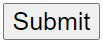

Detection of SA0 and SA1 faults in 3-Bit Even Parity Generator
Even Parity Generator
Step-1) Select the desired option for fault from the dropdown under fault.
Step-2) Select the desired option for wire from the dropdown under wire .
Step-3) Give the binary values for each input wire.
Step-4) Click on "Submit"
Step-5) Equation used to detect the fault and the error table will be generated.
#NOTEP indicates the output without considering faults.
P' indicates the output considering faults.